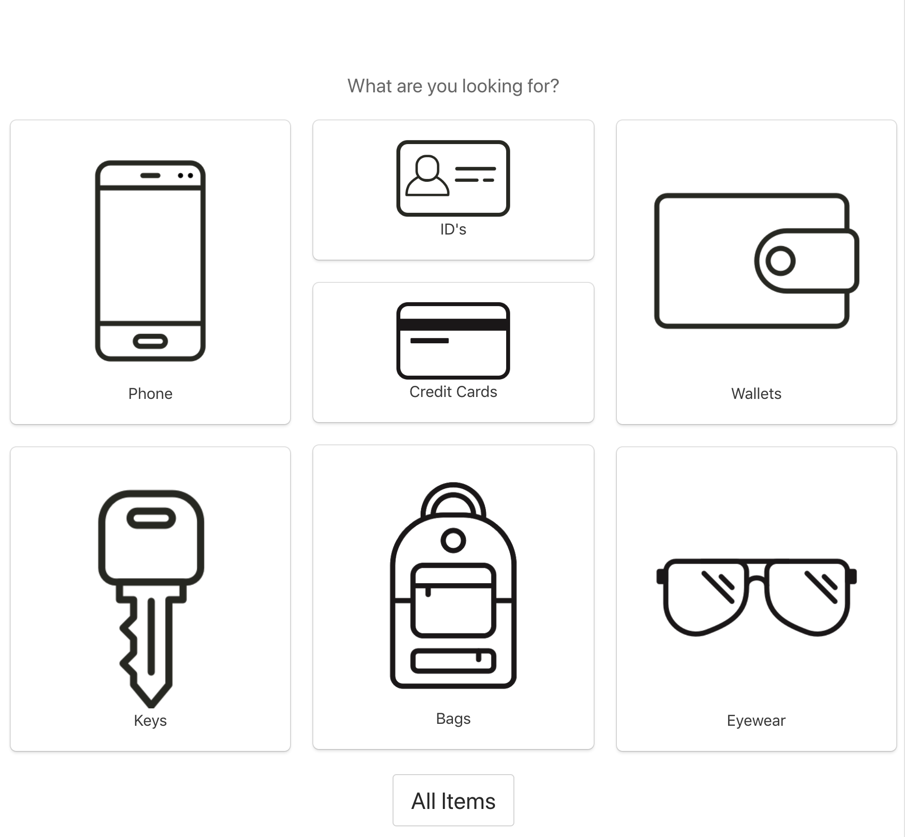

HOME
ABOUT US
CONTACT US
SERVICES
FORM
TABLE
MY BOOK
Hey Welcome to our website
Lost and Found item tracking system

Have you ever felt so stressed because of your lost item?
And wonder how you can get to see your lost item ever again?
How it costed you so much to get it and then you lost it?
I want to tell you that don"t stress your self more wondering if it is possible to see your items again,
yes it is possible to get them back with the help of our website LOST AND FOUND ITEMS TRACKING SYSTEM.
A lost and found item tracking system is a software application that helps organizations manage their lost and found items. The system typically includes fea-tures for logging lost items, recording found items, and matching lost and found items.
The system can be used to track a variety of lost and found items, including:
1.Electronics:
Laptops, tablets, smartphones, camer-as, and other electronic devices
2.Wallets:
Cash, credit cards, identification cards, and other personal belongings
3.Jewelry:
Rings, necklaces, bracelets, and other jew-elry items
4.Clothing:
Shoes, coats, hats, and other clothing items
5.Other items:
Backpacks, umbrellas, luggage, and other miscellaneous items.s
The system can also be used to track lost and found items that are located in a variety of places, includ-ing:
1.Schools:
Classrooms, hallways, cafeterias, and oth-er school areas
2.Offices:
Cubicles, conference rooms, and other office areas
3.Hospitals:
Patient rooms, waiting rooms, and other hospital areas
4.Hotels:
Rooms, hallways, and other hotel areas
5.Other locations:
Parks, restaurants, and other public areas
The system can help organizations to:
1.Reduce the number of lost and found items:
By making it easier for people to report lost items and for organizations to track lost items, the system can help to reduce the number of lost and found items.
2.Increase the chances of finding lost items:
By matching lost and found items with their owners, the system can help to increase the chances of finding lost items.
3.Save time and money:
By automating the process of managing lost and found items, the system can help organizations to save time and money.
Overall, a lost and found item tracking system can be a valuable tool for organizations that want to improve their lost and found process.
The system can help to reduce the number of lost and found items,
increase the chances of finding lost items,
and save time and money.
Here are some of the benefits of using a lost and found item tracking system:
1.Increased efficiency:
The system can help to streamline the process of managing lost and found items, which can save time and resources.
2.Improved accuracy:
The system can help to ensure that lost and found items are properly tracked and accounted for.
2.Improved accuracy:
The system can help to ensure that lost and found items are properly tracked and accounted for.
3.Enhanced security:
The system can help to deter theft and fraud by providing a secure way to store and track lost and found items.
4.Improved customer service:
The system can help to improve customer service by providing a convenient way for people to report lost items and track their progress.
Increased visibility:
The system can help to increase visibility of lost and found items by making them easier to find and search for.
it is very possible to lost something treasure to you with no hope of finding it ever again, but hear me out it is not a big deal after losting something of yours in these days
there a way now to find your lost items again and hold it in your hands the answer is this system lost and found item tracking system
An Lost and Found item tracking system can be a crucial customer service tool when your attendees run into a common problem, lost property.
For a process that has existed since… well, since people had the stuff to lose, you have many approaches and tools to choose from.
The Problem People lose stuff; due to misplacement, loss, or occasionally theft. The type of item missing often determines the kind and severity of the problem for your customers while also directly impacting your strategy to help return found property.
No matter the cause, your customer has a few challenges when an item is absent. Since the most commonly lost items include wallets, phones, keys, identification/credit cards, you lose
happy paying customers when these items go missing.
visit us to help you we are here for you.